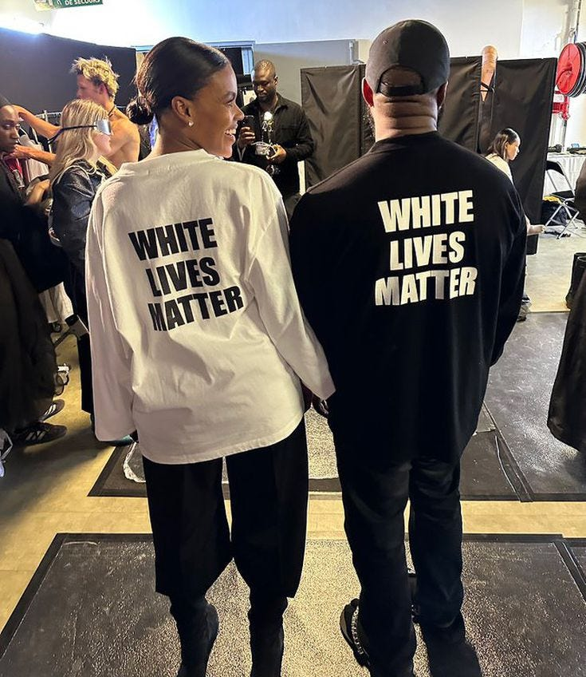

What looks like an impulsive tweet was the final step in a six-day ladder - each rung documented, each one ignored until this one wasn't.
Six days before the tweet, Kanye West walked out at Paris Fashion Week wearing a shirt that read "White Lives Matter" - a phrase the ADL classifies as a white supremacist slogan. The fashion world reacted with near-universal condemnation.
Kanye doubled down.
$3 billion in 18 days
Seven major partnerships ended in under three weeks - a slow-motion public dismantling in real time.
In the 18 days following the tweet, six major partnerships ended publicly - Adidas, Gap, Balenciaga, CAA, Foot Locker, and Vogue - stripping an evaluated $2.94B from his net worth. But the full commercial collapse extended further. JPMorgan Chase severed his business banking, cutting him off from mainstream financial infrastructure. TJX closed its global network of over 4,700 TJ Maxx, Marshalls, and HomeGoods stores to Yeezy product. MRC scrapped a completed documentary ready for distribution. His personal lawyer walked out at the moment of maximum legal exposure. When Forbes ran the numbers on October 25th - the same day Adidas made its announcement - they placed his total net worth at $400 million, down from $2 billion.
A loss of $1.6 billion in verified net worth, and an estimated $3B+ in total deal value, erased in under three weeks by a tweet that was live for 18 hours.
Kanye appeared on Piers Morgan's show on October 19th - before Adidas had even announced its decision. Morgan asked repeatedly whether he was sorry. Kanye said "Absolutely not" three times before, under sustained pressure, producing a partial statement: "I will say I'm sorry for the people that I hurt with the confusion that I caused."
He did not say the tweet was wrong. He apologised for the confusion - not the content.
In a later interview, he added: "I was drinking when I put up the DEFCON tweet. Hennessy. It turns us gray. The demons come out." When asked why he hadn't said that earlier, he said he didn't want to be discredited - because he still considered it his truth.
The ADL documented 30 real world antisemitic incidents directly tied to Kanye's rants in 2022.